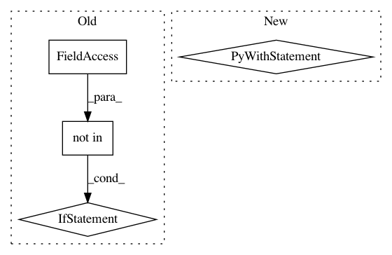

59d8b58dced84ed5cc2846f8fe9c522b16cc7c05,sos/sos_executor.py,Base_Executor,reset_dict,#Base_Executor#,134
Before Change
env.sos_dict.set("__step_output__", [])
// load configuration files
if "CONFIG" not in self.shared:
cfg = {}
sos_config_file = os.path.join(os.path.expanduser("~"), ".sos", "config.yml")
if os.path.isfile(sos_config_file):
try:
with open(sos_config_file) as config:
cfg = yaml.safe_load(config)
except Exception as e:
raise RuntimeError("Failed to parse global sos config file {}, is it in YAML/JSON format? ({})".format(sos_config_file, e))
// local config file
sos_config_file = "config.yml"
if os.path.isfile(sos_config_file):
try:
with open(sos_config_file) as config:
dict_merge(cfg, yaml.safe_load(config))
except Exception as e:
raise RuntimeError("Failed to parse local sos config file {}, is it in YAML/JSON format? ({})".format(sos_config_file, e))
// user-specified configuration file.
if self.config["config_file"] is not None:
if not os.path.isfile(self.config["config_file"]):
raise RuntimeError("Config file {} not found".format(self.config["config_file"]))
try:
with open(self.config["config_file"]) as config:
dict_merge(cfg, yaml.safe_load(config))
except Exception as e:
raise RuntimeError("Failed to parse config file {}, is it in YAML/JSON format? ({})".format(self.config["config_file"], e))
// set config to CONFIG
env.sos_dict.set("CONFIG", frozendict(cfg))
SoS_exec("import os, sys, glob", None)
SoS_exec("from sos.runtime import *", None)
self._base_symbols = set(dir(__builtins__)) | set(env.sos_dict["sos_symbols_"]) | set(SOS_KEYWORDS) | set(keyword.kwlist)
self._base_symbols -= {"dynamic"}
After Change
// local config file
sos_config_file = "config.yml"
if os.path.isfile(sos_config_file):
with fasteners.InterProcessLock("/tmp/sos_config_"):
try:
with open(sos_config_file) as config:
dict_merge(cfg, yaml.safe_load(config))
except Exception as e:
raise RuntimeError("Failed to parse local sos config file {}, is it in YAML/JSON format? ({})".format(sos_config_file, e))
// user-specified configuration file.
if self.config["config_file"] is not None:
if not os.path.isfile(self.config["config_file"]):
raise RuntimeError("Config file {} not found".format(self.config["config_file"]))
with fasteners.InterProcessLock("/tmp/sos_config_"):
In pattern: SUPERPATTERN
Frequency: 3
Non-data size: 4
Instances
Project Name: vatlab/SoS
Commit Name: 59d8b58dced84ed5cc2846f8fe9c522b16cc7c05
Time: 2017-02-02
Author: ben.bog@gmail.com
File Name: sos/sos_executor.py
Class Name: Base_Executor
Method Name: reset_dict
Project Name: ray-project/ray
Commit Name: 5cfa1934e4a2157d07ef534e1033a3f0e5bc1082
Time: 2020-12-18
Author: me@barakmich.com
File Name: python/ray/experimental/client/server/server.py
Class Name: RayletServicer
Method Name: _schedule_function
Project Name: tensorflow/datasets
Commit Name: 3fb0880e6ccfdb4c873cc7cfa13e564f1b921195
Time: 2020-04-23
Author: epot@google.com
File Name: tensorflow_datasets/core/registered.py
Class Name:
Method Name: builder